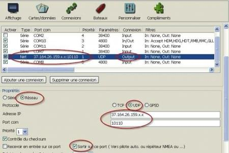
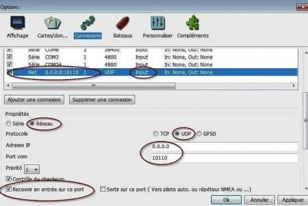
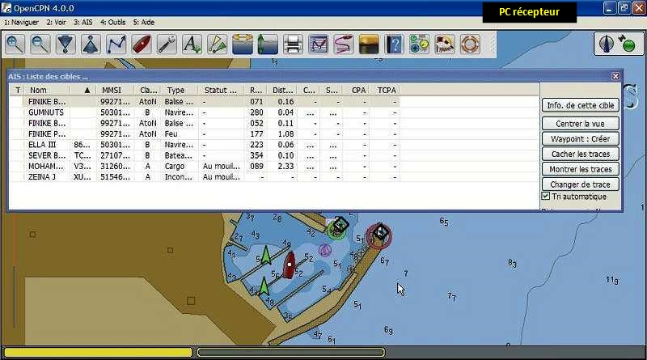
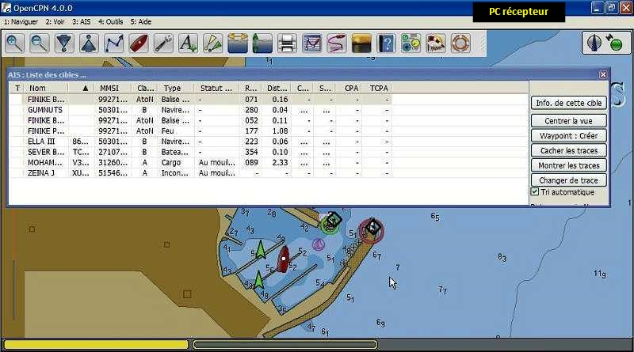
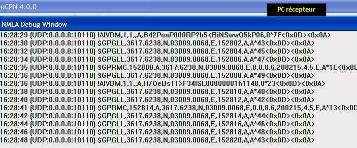
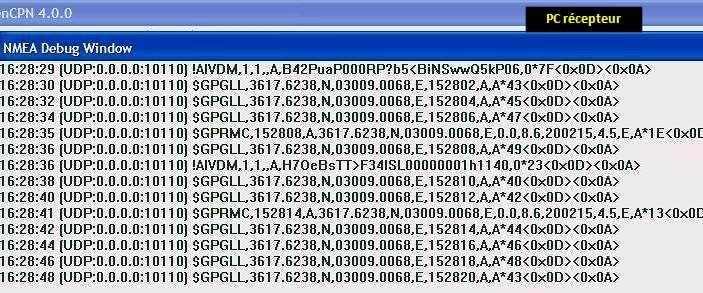

Network Repeater
From Gilletarom's website some excellent information on Networking
http://www.plaisance-pratique.com/OpenCPN-Networking-repeater-to
Opencpn network/RJ45 (Ethernet) cable
The means :
- OpenCPN, know IP of the server PC, has an RJ45 (Ethernet) cable or Wifi on both, PC
- Has set both networked PCs, cable or Wifi
- OpenCPN on the PC server
Setting OpenCPN on the PC server
- Setting Options
- connections
- add Connection
- Set as follows by putting your IP address followed by : xx
- Properties ⇒ “Network”
- Protocol ⇒ “UDP”
- Adress ⇒ your IP address followed by : “.x.x”
- Data Port com “10110”
- Output on this port “OK”
- Set “Apply” and then “OK”

Setting OpenCPN on PC Receiver
- Setting Options
- connections
- add Connection
- Set as follows by putting only this IP address, for UDP protocol : 0.0.0.0
- Properties ⇒ “Network”
- Protocol ⇒ “UDP”
- Adress ⇒ “0.0.0.0”
- Data Port com “10110”
- Receive Input on this port “OK”
- Set “Apply” and then “OK ”

Networking
On the server PC On the PC Receiver
 ..
..

For this example, all the NMEA data from the GPS and display of AIS data
**On the server PC On the PC Receiver
 ..

..

- The emission readings and receiving NMEA sentences, under the AIS receptions.
- We see that every sentence received by the transmitter is immediately re-shipped by outgoing connection
 ..

..

NMEA information goes through the RJ45 cable or WiFi and are received on the other PC.
With this application you can have a PC inside and another type tablet outdoors
For more information on OpenCPN Wifi Networking, OpenCPN WiFi network between XP, W7 and W8 tablet, Creation of a network using a batch file see Pratiques et Techniques de la Plaisance